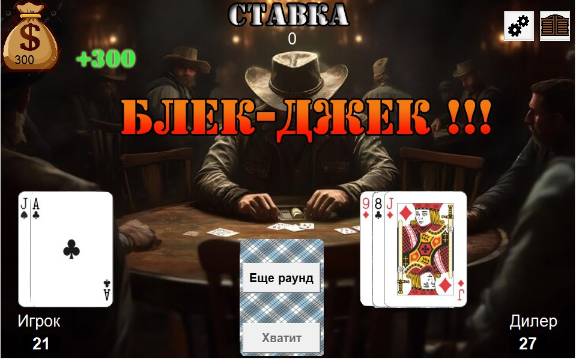
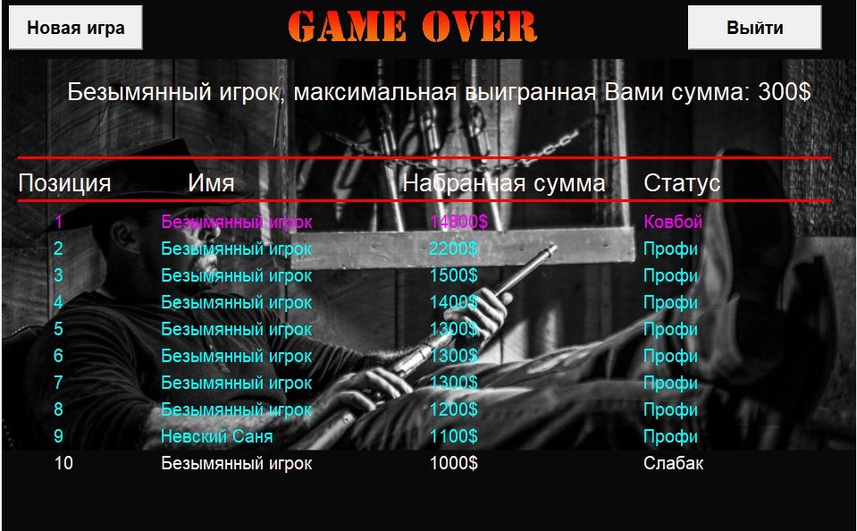

 В левом верхнем углу экрана показан размер кошелька игрока, то есть оставшееся количество денег. В центре верхней части указана текущая ставка на следующий раунд. Игрок может либо увеличить, либо уменьшить ставку. Конечно, с нулевой ставкой начать раунд нельзя. Раунд начинается со сдачи двух карт игроку и двух карт дилеру. Далее игрок может либо открывать карты еще, либо остановиться и тогда ход переходит к оппоненту.
 Игрок может открывать карты сколько угодно,
но необходимо помнить, что набор более, чем 21 очка- обозначает перебор, то есть, проигрыш.
Так же проигрышем будет, если игрок наберет очков меньше, чем оппонент. Если же игрок получает 21 очко
уже из первых двух карт- такая ситуация называется "Блэкджек": игрок сразу выигрывает
и его выигрыш увеличивается в полтора раза.
Игрок может открывать карты сколько угодно,
но необходимо помнить, что набор более, чем 21 очка- обозначает перебор, то есть, проигрыш.
Так же проигрышем будет, если игрок наберет очков меньше, чем оппонент. Если же игрок получает 21 очко
уже из первых двух карт- такая ситуация называется "Блэкджек": игрок сразу выигрывает
и его выигрыш увеличивается в полтора раза. Если игрок победил в раунде- сумма выигрыша прибавляется к сумме, имеющейся в кошельке. В случае проигрыша- сумма, которая была поставлена на кон, уходит дилеру. В любой момент игрок может зафиксировать полученную в ходе игры сумму и завершить игру. В таком случае, игроку будет показана таблица рекордов.
 Лабиринт. Мини-РПГ-игра с прокачкой, поиском сокровищ, сражениями с врагами.
Лабиринт. Мини-РПГ-игра с прокачкой, поиском сокровищ, сражениями с врагами. Морской бой. Игра из детства на поле размером 10 на 10 клеток против компьютерного оппонента.
Морской бой. Игра из детства на поле размером 10 на 10 клеток против компьютерного оппонента. Викторина с разными темами, случайной комбинацией вопросов и подсчетом очков в финале
Викторина с разными темами, случайной комбинацией вопросов и подсчетом очков в финале